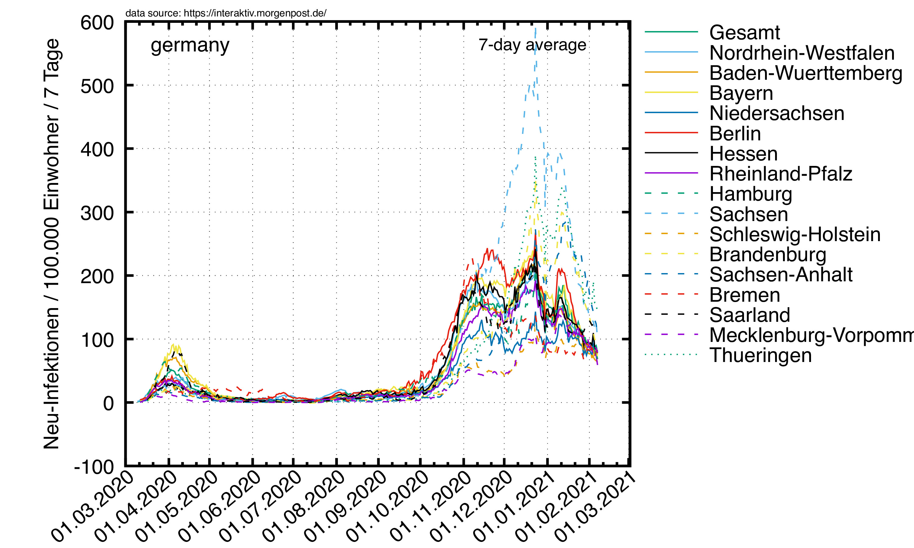

News
In separatem Fenster anschauen.
- 20. März 2021:
-
- 17. März 2021:
-
- 5. März 2021:
-
- 4. März 2021:
-
- Regierung beschließt den "Lockerdown" (schon wieder ein neues Wort erfunden!). Er klingt genauso wohldurchdacht wie ControlCOVID.
- 26. Februar 2021:
-
- Die 7-Tage-Inzidenz in
Deutschland ist seit Ende Dezember 2020 das erste mal wieder
größer als die 7-Tage-Exzidenz (neues Wort! Ich bin
der erste, ok?). D.h., es werden mehr Leute krank als gesund.
- 25. Februar 2021:
-
- Die Datenreihe für Deutschland läuft jetzt seit einem Jahr.
- 24. Februar 2021:
-
-
Das RKI hat sich was Schlaues überlegt: ControlCOVID. Klingt ein bisschen nach Beschwörungsformel, ist aber bestimmt ein sauber durchgerechnter 4-Stufenplan. Kurz zusammengefasst: 3 ≙ (50 ∧ 12%) ⇒ alles zu (außer Fußball natürlich);
2 ≙ (35 ∧ 5%) ⇒ Frisöre auf, Rest zu; 1 ≙ 10 ⇒ 50 drin ∨ 500 draußen, sonst 100 bzw. 1000. Und wie immer gilt: Aderlass nur bei Vollmond.
- 19. Februar 2021:
-
- 18. Februar 2021:
-
- 17. Februar 2021:
-
- 12. Februar 2021:
-
- Das Skript für die Torten und den Apokalypse-Plot war seit Tagen
kaputt, und keiner hat's gemerkt! (Ich auch nicht...)
- 07. Februar 2021:
-
-
Mal zum Vergleich: erste und zweite Welle.

- 31. Januar 2021:
-
-
Hab jetzt mal von der 10-Tage-Mittelung auf 7-Tage-Mittelung umgestellt.
- 30. Januar 2021:
-
- Da habt Ihr Eure
7-Tage-Inzidenz,
aber natürlich wieder ein klein bisschen anders als alle anderen ;-)
- 28. Januar 2021:
-
- Bundesweite Inzidenz unter 100. Freibäder aufmachen, sofort! (Jaja, die Inzidenzzahlen mach ich auch noch auf die Seite.)
- 26. Januar 2021:
-
- Kuriosität: Der qualitative Verlauf des Apokalypsen-Plots ist
für Deutschland,
Europa und
Andere Länder sehr ähnlich: man vergleiche die Positionen der Maxima/Minima, die zum Teil auf den Tag genau gleich sind. Zu beobachten ist eine ungefähr monatliche Schwankung. Vielleicht steht im Mondkalender was dazu...?
- 20. Januar 2021:
-
- Tagesanstieg im 10-Tagesschnitt so "niedrig" wie seit Anfang November nicht mehr. Robl auch auf Tiefstand. Abwarten...
- 31. Dezember 2020:
-
- 16. Dezember 2020:
-
- 08. Dezember 2020:
-
- 03. Dezember 2020:
-
- Verdopplungszahlen in Deutschland überdurchschnittlich niedrig (d.h. schlecht)
im weltweiten Vergleich.
- 02. Dezember 2020:
-
- 01. Dezember 2020:
-
- 29. November 2020:
-
- 22. November 2020:
-
- Mal eine Bemerkung zum Apocalypse-Plot: Die Datenpunkte
hängen direkt mit der "Verdopplungszeit" zusammen – noch so eine
Kenngröße, die vor ein paar Monaten noch hip war, über die
heute aber keiner mehr spricht. Wann kriegt der Doomsday endlich seine 15 minutes of
fame?
- 19. November 2020:
-
- Hat schon mal jemand nachgeschaut, ob die Schallplatte beim
[insert your favorite news station here] vielleicht seit
Wochen einen Sprung hat? Beispiel Deutschlandfunk:
"Die Reproduktionszahl, der sogenannte R-Wert, lag in
Deutschland laut RKI gestern bei 0,97. Der sogenannte Sieben-Tage-R-Wert
lag bei 0,95 – nach 0,97 am Vortag. Das heißt, dass 100
Infizierte rechnerisch 95 weitere Menschen anstecken. Der Wert bildet
jeweils das Infektionsgeschehen vor 8 bis 16 Tagen ab. Liegt er für
längere Zeit unter 1, flaut das Infektionsgeschehen ab."
- Aber heute neu (siehe aber auch die News vom 10. November
2020):
"In den vergangenen Wochen war der täglich genannte R-Wert allerdings
häufig nachträglich nach oben korrigiert
worden."
Da bleib ich lieber beim Robl-Wert, der wird einfach
gleich immer richtig gemacht.
- 17. November 2020:
-
- Die Plots sind jetzt auf die letzten 120 Tage eingeschränkt.
Den Verlauf vom 25.02.-17.11.2020 kann man hier sehen.
- 13. November 2020:
-
- 10. November 2020:
-
- 06. November 2020:
-
-
- Meldung im
Deutschlandfunk heute: "Die Reproduktionszahl (R-Wert) lag in Deutschland laut RKI-Lagebericht vom Donnerstagabend bei 0,79 (Vortag: 0,81).
[...] Der R-Wert bildet jeweils das Infektionsgeschehen
etwa eineinhalb Wochen zuvor ab." – Frage: Wie passt das zum
beobachteten Trend über die letzten eineinhalb Wochen? –
Nebenbemerkung: Robl≈2,6.
- 05. November 2020:
-
-
- Doomsday wird jetzt mit
quadratischem Fit bestimmt. Das macht das Bild (momentan!) etwas
optimistischer.
- 22. Oktober 2020:
-
-
- 16. Oktober 2020:
-
-
-
Erstaunlich: die Kurzlebigkeit von Kennzahlen in der Epidemiologie ("Verdopplungszahl",
"Reproduktionszahl R" (don't get me started...), "7-Tage-Inzidenz"). Was
kommt als nächstes?
- 15. Oktober 2020:
-
-
-
Doomsday für Deutschland ist der 27. Oktober 2020.
- 14. Oktober 2020:
-
-
- 11. Oktober 2020:
-
-
-
Seite komplett umstrukturiert. Für Nostalgiker ist die alte
Darstellung aber noch hier verfügbar.
Old News